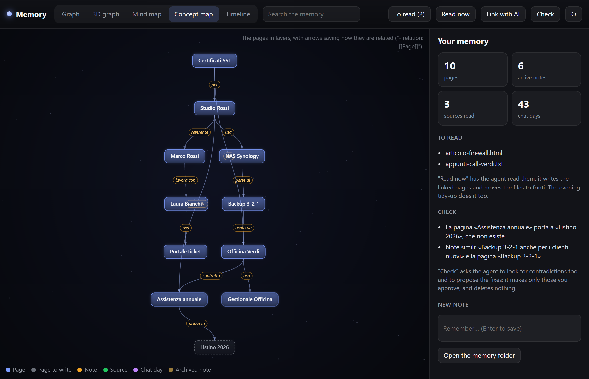
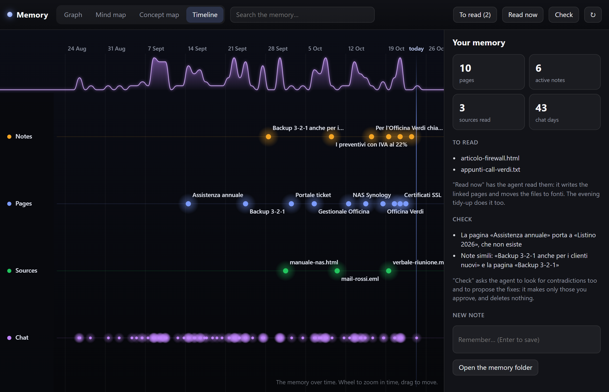

Memory and second brain
What EasyIsland remembers, how it learns from your files and how to explore it as a graph, maps and timeline.
EasyIsland's memory is made of Markdown files in %APPDATA%\EasyIsland\memoria, which you can read and fix with any editor. It works with every engine. It turns off together with the history (Settings → Chat → History). Folder and file names on disk are in Italian (memoria, diario, pagine, da-leggere, fonti, archivio).
#Notes: MEMORIA.md
Things to always remember, one per line with the date: preferences, clients, people, how something is done. They go in front of the first question of every conversation (4,000 characters at most, newest first), so they cost few tokens.
- The chat saves them by itself when you say something that also holds for next time.
- You save them with
/ricorda …in the chat, or from the Remember… field of the Memory window. - Past 60 notes the oldest move to
archivio.md, which stays searchable. - No passwords or keys: the chat is instructed not to save them.
#The diary
diario/YYYY-MM.md: one line per answered question (time, engine, question, start of the answer). EasyIsland writes it without any model, so it costs nothing. The chat looks into it only when needed ("last time, how did we solve…?").
#Linked pages
pagine/<name>.md: one page per subject (a person, a client, a project, a concept), like a wiki:
# Studio Rossi
fonte: mail-rossi.eml
aggiornata: 2026-10-24
riassunto: Cliente di Torino, studio di commercialisti, referente Marco Rossi.
alias: Rossi, Studio Rossi & C.
Client since 2021, accountants, 8 workstations.
- uses: [[NAS Synology]]
- contact: [[Marco Rossi]]
- contract: [[Annual support]][[Title]]links another page; a line- relation: [[Other]]says how they are related.riassunto:(summary) is one sentence on who or what it is;alias:the other names you call it by (acronyms, product names). They are optional: the memory engine or the chat writes them, and you can fix them by hand.- When the chat searches the memory, it gets the pages found plus the summary of the linked ones: more context with few words. It also goes one step further, only along strong links: if "Studio Rossi" has "Marco Rossi" as contact, and his page says "- sede: [[Torino]]", it reaches Torino too. It searches the aliases too: asking about "UDM" finds the page "Dream Machine", and a
[[UDM]]leads to that page. - The chat writes them when you ask "make a page about…", and from sources (below).
- Safe writes: if you edit a page by hand while the agent works on it, its write is refused; it must read it again and start from your version.
#To read: teaching with files
Put articles, notes, meeting transcripts, saved mails (.md, .txt, .html, .eml, .csv, .json…) in the da-leggere folder, or drag them onto the Memory window. Then:
- the agent reads each file;
- writes or updates the right pages, with the file's name in
fonte:and the links; - moves the file to
fonti/, untouched.
It happens in the evening with the Memory digest or right away with Read now. Files that aren't text (PDF, Word) are passed with their path: Claude Code can open them.
#The check
EasyIsland finds by itself: similar notes or notes older than six months, links to pages that don't exist, pages that are isolated, old or about the same subject. The agent adds the contradictions it notices and proposes the fixes in the island, one per line, with Do all / None (or write which ones). It applies only the approved ones and never deletes: at most it moves a note to archivio.md or a page to archivio/pagine.
It runs on Sunday evening with the digest, if there's something to fix, or right away with Check.
#The evening digest
Settings → Flows → Memory digest: every evening at 22:30 the agent
- rereads the day's diary and proposes at most 5 things to remember (it saves only those you approve);
- reads the files in
da-leggere; - on Sundays runs the check.
If there's nothing to do it doesn't run and costs nothing.
#Memory engine
In Settings → Chat and AI engines → Memory → Memory engine you can pick an engine, a free one too, that links the memory by writing it into the files: it creates a page for every subject that comes back in several notes (a customer, a project, a person), with references to the notes, adds relations between pages ("customer of", "works with"…) and keeps every page's summary up to date, with its other names. It works by itself after the evening digest and when you press Link with AI in the map. It only adds: it never deletes or rewrites your notes. With a cloud engine the notes are sent to that service; with Ollama or LM Studio they stay on the PC. With None the map links the items by itself, from the words in common.
#The Memory window
The button with three nodes at the top of the island (or Settings → Chat and AI engines → Memory → Map) opens a window of its own with the memory drawn four ways. A note links to the pages it talks about (even without their full title, from the words in common) and to similar notes; archived notes tied to nothing do not crowd the graph.
#Graph

Every page, note, source and chat day is a star, joined to the others by its links. The most linked stars are bigger. Click a star: its links light up, with sparks running along them, and on the right you see its text and the list of links.
#3D graph
The same graph in space, like a globe of stars. Drag to turn it (it keeps spinning a little when you let go), wheel to come closer, double click to see everything. Far stars are fainter; click one and the globe turns to bring it in front of you.
#Mind map

One subject in the middle and what grows from it, up to three rings: each branch has its colour and grows from the centre. Click a branch to bring it to the middle.
#Concept map

Pages in layers, top to bottom, with arrows that name the relation ("uses", "contact", "contract"…). Pages mentioned but not yet written are dashed.
#Timeline

The memory over time, in lanes: notes, pages, sources and chat. At the top a wave shows how many questions you asked each day. Mouse wheel to zoom in time (from years to hours), drag to move.
#In the window
- Search the memory…: lights up what matches; Enter goes to the first.
- To read (n): opens the folder; Read now and Check start the tasks right away.
- Drag files onto the window: they go to
da-leggere. - Remember…: a new note.
- Panel on the right: statistics, waiting files, check results, or the chosen item with Open the file.
- Wheel to zoom, drag to move, double-click to see everything.
- It refreshes by itself when the agent writes to the memory.